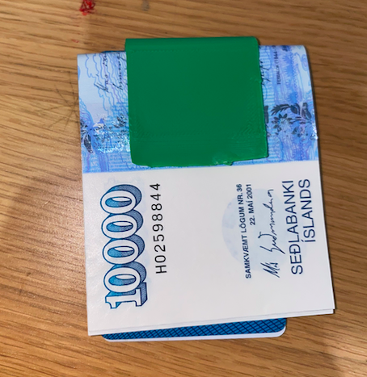

3D
Lýsing á verkefni
Þetta verkefni skiptist í 2 hluta. Hanna módel fyrir 3D prentun sem ekki væri hægt að framleiða með frádráttar framleiðslu og hitt var að 3D skanna hlut með photogrammetríu.
Bolti og peningaklemma
Í þessu verkefni var ég búinn að ákveða að hanna og prenta út bolta. Ég náði ekki að prenta boltann minn, þar sem hann var of stór þar með ákvað ég að hafa þetta verkefni tvíþætt. Ég mun sýna hvernig og hannaði boltann og einnig mun ég sýna hvernig ég hannaði og prentaði seðlaaklemmu í 3D prentaranum.
Mynd af boltanum og klemmunni


Undirbúningur
Til þess að búa til boltann/peningarklemmuna þá þurfum við að hafa eitthvað hönnunarforrit. Forritið sem ég notaði var Fusion 360 og er hægt að downloda því HÉR(Fusion360). Ég ákvað að nota Fusion þar sem ég hef mikla reynslu af því og finnst það afar þægilegt.
Það þarf einnig að downloda forriti til þess að geta prentað út hlutinn. Mæli ég með tveimur forritum. Þessi forrit eru Cura og Pursa slicer. Ég notaði bæði þessi forrit og mæli ég með þeim afar þægileg. Hér eru linkar til að downloda forritunum: Pursa slicer og Cura
Framkvæmd Boltanns.
Ég ákvað að leit á youtube hvort að einhver væri búinn að búa til flottan bolta sem væri hægt að teikna upp í Fusion 360. Fann flottan bolta á youtube sem ég gerði. Hér er nákvæmt youtube video sem ég fór eftir. Youtube linkur. Lennti í því að þurfa að breyta teikningunum mínum oft þar sem boltinn var alltaf of stór (þungur). Þetta var alveg frekar flókinn bolti og fór mikill tímí í að hanna boltann þess vegna ávkað ég að skirfa líka um boltann hérna þó að ég hafi ekki náð að prenta hann út. Videóið sem ég fann er afar gott og þægileg aðferð til þess að teikna bolta í tveimur formum. Ég hannaði minn bolta mjög svipað en þær breytingar sem ég gerði voru lang mest varðandi stærð og mynstur á boltanum.
Ég byrjaði á því að teikna fimmhyrning sem hafði hliðarlegngdirnar (20 mm) og út frá því þá bjó ég til línu sem var með hallan 37.5 gráður eins og sést hér á myndinni. Ástæðan fyrir þessari línu var að geta teiknað næsta form í þessum halla.
 Teiknaði svo þrýhyrning á línuna með hliðarlengdina 20 mm eins og fimmhyrninginn.
Teiknaði svo þrýhyrning á línuna með hliðarlengdina 20 mm eins og fimmhyrninginn.
 Skipunin loft i Fusion til að fylla hyrningana.
Skipunin loft i Fusion til að fylla hyrningana.

 Bjá til hálfhring til að ákvað stærð boltans.
Bjá til hálfhring til að ákvað stærð boltans.


 Til að spara sér skrefin þá notum við skipunina circual pattern til að móta boltann með formunum.
Til að spara sér skrefin þá notum við skipunina circual pattern til að móta boltann með formunum.

 Nú er halfur boltinn klár og núna er einungis 1 skref eftir og það er að nota skipunina mirror í Fusion og þá er boltinn klár.
Þegar búið er að teikna upp hlutinn þá setjum við hann inn í forritin okkar annað hvort Prusa Slicer eða Cura það fer eftir í hvorum prentara þú ert að fara prenta. Ég ákvað að nota Pursa.
Nú er halfur boltinn klár og núna er einungis 1 skref eftir og það er að nota skipunina mirror í Fusion og þá er boltinn klár.
Þegar búið er að teikna upp hlutinn þá setjum við hann inn í forritin okkar annað hvort Prusa Slicer eða Cura það fer eftir í hvorum prentara þú ert að fara prenta. Ég ákvað að nota Pursa.
 Þegar ég setti boltann minn í forritið þá sá ég að boltinn væri allof stór og þurfti að breyta honum og minnka. Eftir að hafa breytt honum nokkrum sinnum og alltaf of stór þá ákvað ég að teikna upp annan hlut. Ég vildi ekki prenta út pínulítinn bolta.
Þegar ég setti boltann minn í forritið þá sá ég að boltinn væri allof stór og þurfti að breyta honum og minnka. Eftir að hafa breytt honum nokkrum sinnum og alltaf of stór þá ákvað ég að teikna upp annan hlut. Ég vildi ekki prenta út pínulítinn bolta.

Framkvæmd seðlaklemmunar.
Þegar ég vissi það að ég næði ekki að gera boltann minn í þeirri stærð sem mig lanaði að prenta út í þá ákvað ég að gera annan hlut. Þar lét ég hugmundarflugið ráða og byrjaði bara að teikna botnflöt og úr því varð svo þessi seðlaklemma. Mjög einfalt er að búa til svona klemmu. Klemman samansetdur úr tveimur boxum og einu arc. Þetta er svo extrudað og þá er komin klemma. Svo til að gera þetta aðeins meira fancy þá setti og holu í gegnum botnhliðina og fadaði brúnirnar.
Áður en ég fór í það að framkvæma klemmuna þá gerðum við strákarnir smá prufu á 3D prentaranum og kom í ljós að allt sem var 60 gráður eða meira þá þarf prentarinn stuðning til að prenta út með 20% innfill. Þar sem ég var með 90 gráður og þá þurfti ég mikinn stuðning til að prenta út.


Prentunin
Eins og kom áðan þá ákvað ég að nota Pursa slicer. Til þess að geta prentað út í Pursa þá þarf að setja gögn á ákveðinn minniskubb. Skrefin:1. Opna Pursa slicer í tölvunni.
2. Opna skjalið í forritinu.
3. Stilla hlutinn ef hlutinn kemur ekki rétt upp á skjáinn.
4. Stilla infill á hlutinn

5. Sava hlutinn á kubbinn.
6. Setja kubbinn í prentarann og finna skalið í í honum.

7. Ákveða hvaða lit þú ætlar að prenta hlutinn þinn í. Ég ákvað að prenta út í grænu.
8. Þá er prentarinn tilbúinn í prentun.
Þá er seðlakelmman tilbúin.Niðustöður
Seðlaklemman kom ágætlega vel út en það var smá galli í prentuninni. Hliðarnar ofan á klemmunni bognuðu aðiens og er ástæða fyrir því.
Útskýringin er sú að ég teknaði klemmuna of þunna og bjó ekki til nógu mikinn stuðning fyrir að hliðarnar og þess vegna mistókst það aðeins. 3D prentarinn getur ekki prentað í lausu lofti og þarf að hafa góðan stuðning til að prenta efri hluta klemmunar. Eins og við komumst að í hópverkefninu þá þarf stuðning fyrir allt sem er 60 gráður eða meira. Í minni teikningu þá er ég með 90 gráður og þá þarf mikinn stuðning til að geta prentað hlutinn nákvæmlega eins og við viljum. Einnig flöturinn undir efri hluta klemmunar hann varð ekki sléttur hann var mjög ójafn og tengist það líka stuðningnum sem ég hefi átt að hafa meira.
Ef ég ætti að framkvæma klemmuna aftur þá myndi ég klárlega skoða stuðninginn aftur við klemmuna og einnig skoða hvernig innfillið er á hlutnum.
Hönnunarskjöl - Klemma
3D skönnun
Hlulti af þessu verkefni var að skanna einhvern raunverulegan hlut. Ég ákvað að að skanna mig sjálfan. Ég fékk tölvuna í fablab lánaða til að skanna mig. Til þess að skanna mig þá þarf að downloda forritinu ReconstructeMe. Hér er linkur.
Ég ákvað að skanna mig í tölvunni í fablab þar sem var búið nú þegar að downloda forritinu fyrir mig eina sem ég þurfti að gera var að breyta aðseins stillingunum svo skönnunin myndi heppnast sem best. Hér að neðan má sjá mynd af því hvernig ég stillti myndavélina mína fyrir skönnunina
Þegar búið var að stilla þá var bara komið af því að ýta á start og snúa sér í hring fyrir framan myndavélina.
Niðurstaða
Útkoman var frekar góð og heppnaðist skönnunin mjög vel. Það sem náðist ekki alveg var ofan á hausinn minn en myndavélin náði ekki þangað. Til að bæta úr því þá hefði ég átt að minnka sætið aðeins þá hefði það náð mér öllum. Annars var þetta algjör nelga þesso skönnun.
Hópverkefni
Leitarorð.
Cool 3D printable objects
How to draw a football in fusion 360
Soccer ball fusion (youtube)
how to use Cura
moneyclip